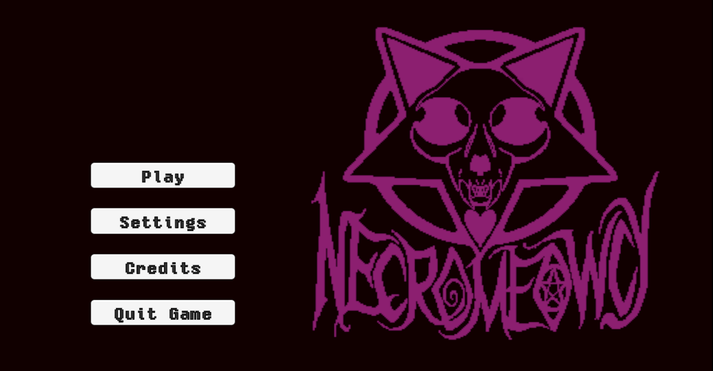
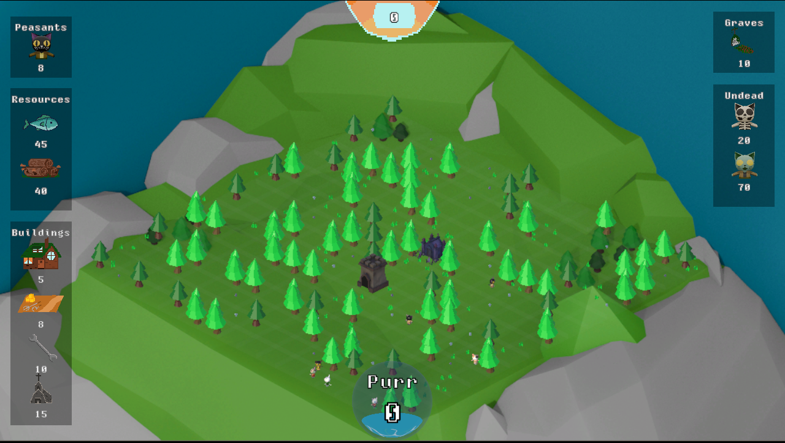
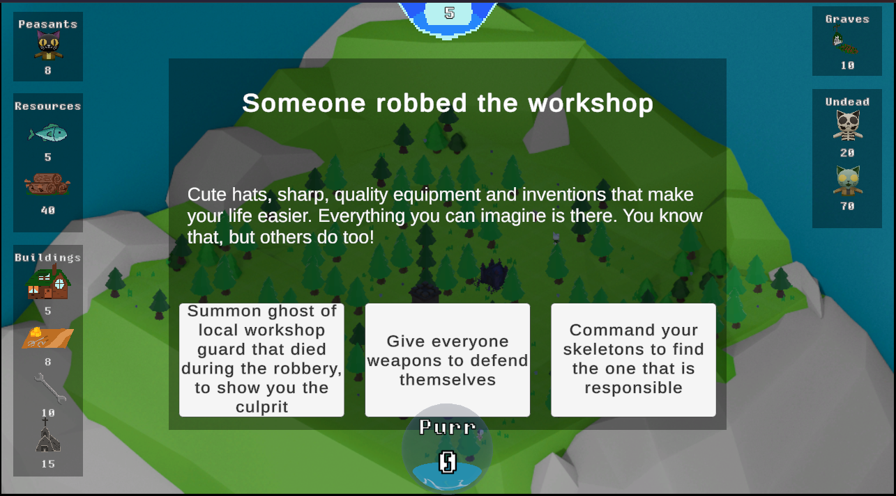

Necromeowcy
Necromancer simulator with town management | 1-week game jam
Engine
Unity
Duration
1 Week Jam
Team Size
9 Developers
Platform
PC
Narrative Design
Quest Design
System Design
VFX Art
Overview
Design Pillars
- Every resource management.
- Keep your population happy or face doom.
- Story driven situations with different outcomes.
- Resurrect your people but be careful not everyone likes to work with zombies.
Systems
- Place buildings on grid.
- Manage your population sending them to different work places.
- Narrative events scaled with progression.
- Resurrection mechanic to boost your economy.
Showcase

Town expansion overview

Quest progression choice

Economic resource management